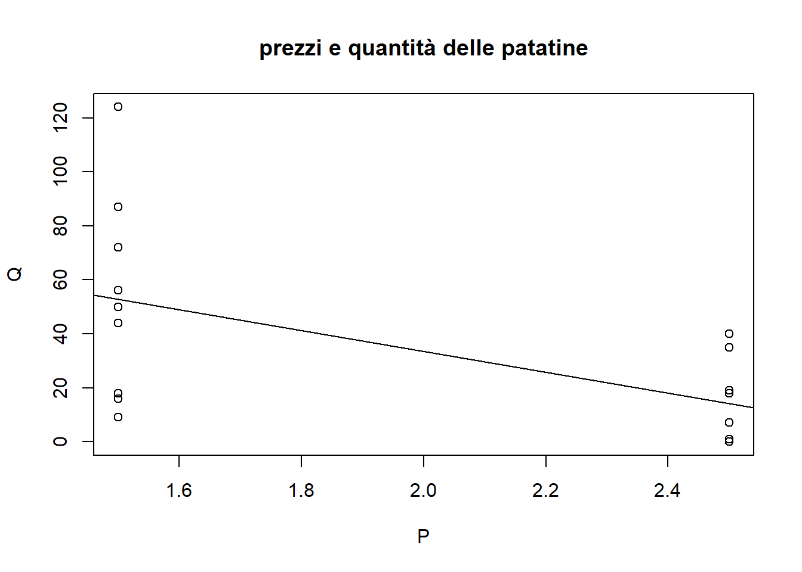
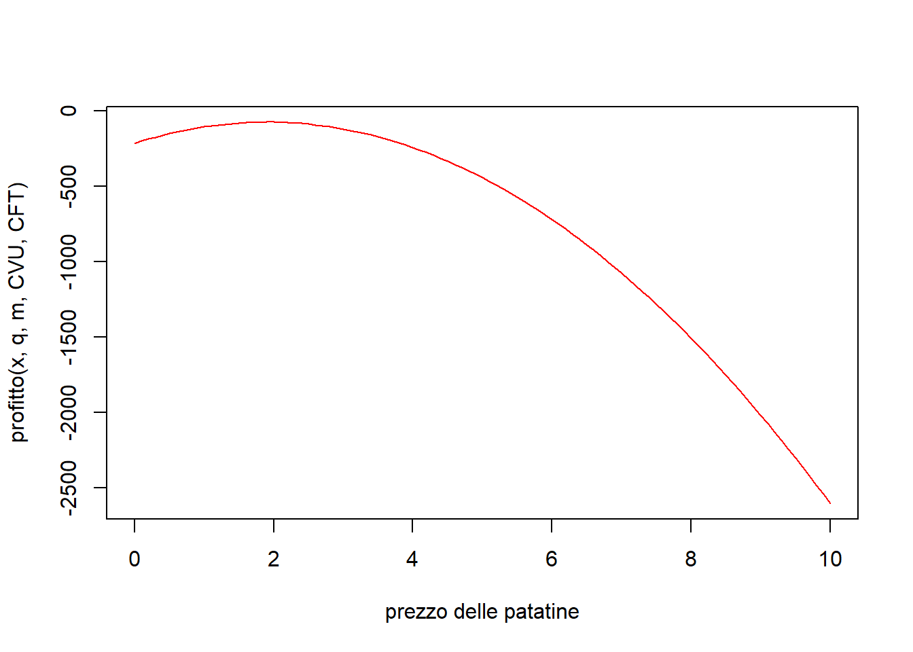
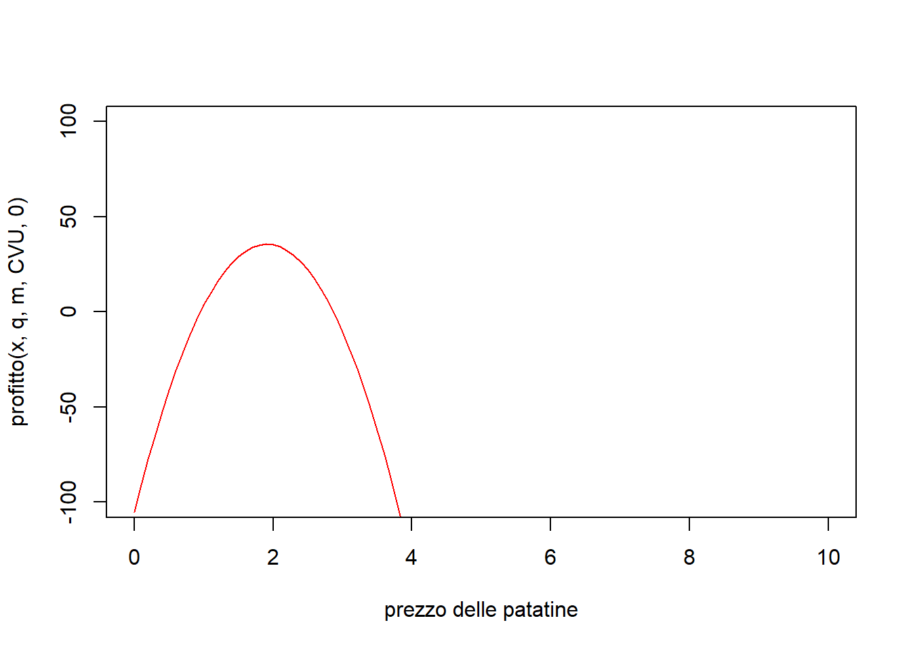
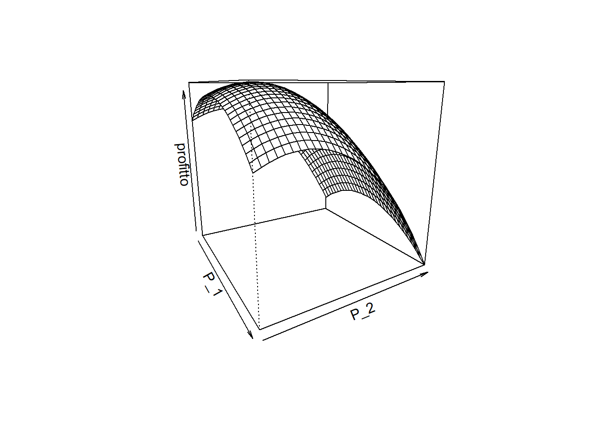

Q = c(16, 72, 44, 124, 40, 19, 18, 35, 18, 9, 87, 56, 50, 7, 1, 0, 7, 1)
P = c(rep(1.5,4),rep(2.5,4), rep(1.5,5), rep(2.5,5))
regressione = lm(Q ~ P)
plot(P, Q, main ='prezzi e quantità delle patatine')
abline(regressione)
Si vogliono qui mostrare alcune tecniche statistiche, economiche e matematiche per prendere delle decisioni su alcuni aspetti economici della paninoteca dell’oratorio tali da massimizzarne i profitti.
.
.
.
.
.
.
Il profitto di qualsiasi attività economica è la differenza tra i ricavi totali e i costi totali.
\(profitto = \pi = R - C\)
Nel contesto della paninoteca (e in tutte le attività economiche manifatturiere) ricavi e costi si definiscono come segue.
\(ricavi = R = P * Q\)
Dove \(P\) è il prezzo (in euro) del bene (tipo un bicchiere di aranciata) e \(Q\) è la quantità (numero di bicchieri di aranciata che hai venduto). Naturalmente massimizzare \(\pi\) implica massimizzare \(R\). La stima di \(Q\) verrà affrontata attraverso strumenti statistici. Tutte le altre variabili che vedremo saranno costanti note o funzioni di altre costanti.
\(costi = C = CFT + CVT = CFT + CVU*Q\)
dove \(CFT\) sono i costi fissi totali, \(CVU\) i costi variabili unitari, \(Q\) la quantità prodotta, che è sempre pari o superiore alla quantità venduta (il valore di \(Q\) nei ricavi). La differenza tra quantità prodotta e quantità venduta vorremmo fosse nulla, e qui assumiamo che lo sia, ma in realtà è data dagli sprechi e dai piatti invenduti, che ogni anno purtroppo ci sono. Ma come calcoliamo \(CVU\)? Nel caso del cibo ha senso ricorrere ai grammi di ingrediente per piatto. Ogni piatto infatti, si compone di diversi costi: i grammi di un certo ingrediente, il tovagliolo, il piatto di plastica ecc. Il \(CVU\) di un singolo piatto si assume essere costante, in quanto tutti i panini cucinati nello stesso modo hanno gli stessi ingredienti nella stessa misura. Una buona stima di \(CVU\) potrebbe essere:
\(CVU = KU + \frac{\sum{Ing_i * PKg_i}}{1000}\)
dove \(KU\) è una costante uguale per tutti i panini (ad esempio il costo complessivo di un tovagliolo, una forchetta, un coltello e un piatto di plastica), \(Ing_i\) è la quantità in grammi dell’ingrediente i-esimo, \(PKg_i\) il relativi prezzo al Kg, e ovviamente si divide per 1000 per passare da grammi a Kg. In un certo senso, \(CVU\) è una riproduzione in piccolo di \(C\), in quanto rappresenta la somma di costi fissi e costi variabili, ma essendo più piccolo e semplice lo conosciamo. Nei dati della paninoteca abbiamo riportato anche delle stime dei costi unitari di ciascun panino, nonché le quantità in grammi per panino e i prezzi al Kg di diversi ingredienti. Si siamo pazzi. E allora?
Esempi di \(CFT\): costo dell’energia elettrica, barili di birra, costo del gas. Esempi di \(CVU\): la somma dei costi in euro dei grammi di prosciutto, zucchine, rucola, formaggio presenti nel singolo panino al prosciutto. Esempi di \(Q\): numero di panini al prosciutto cucinati.
Finora abbiamo dato per scontato il fatto di conoscere \(Q\): il numero di piatti di un dato tipo cucinati e venduti a un dato prezzo. Ovviamente andrebbe notato che
\(Qprodotto >= Qveduto\)
Ma noi facciamo finta che non ci siano sprechi dovuti alla golosità dei cuochi e li assumiamo uguali.
Ma quanti bicchieri di aranciata venderò? Naturalmente è impossibile saperlo dal nulla. Tuttavia io non parto dal nulla, se ho dei dati sulle volte che ho venduto lo stesso prodotto in passato. Noi della paninoteca (a differenza di molti altri) abbiamo raccolto delle tabelle Excel contenenti, per ogni sera e per ogni piatto, prezzi di vendita e quantità vendute, per tre anni. Questi dati non sono tanti, ma ci consentono di usare la statistica per prevedere, per un dato prezzo, la quantità di panini che venderò.
La formula di previsione è una regressione lineare (ci sarebbero dei modelli più sofisticati, ma strumenti semplici portano a soluzioni semplici). La regressione verrà spiegata più avanti, ma intanto introduciamo la formula di \(\hat{Q}\) ovvero del valore previsto di \(Q\), che invece è il valore reale che si vuole prevedere:
\(\hat{Q} = q - m*P\)
Dove \(P\) è il prezzo del bene, \(q\) è la quantità che si venderebbe se si regalasse il bene ai clienti, ovvero per \(P=0\) ed \(m\) è un coefficiente che misura l’impatto che aumenti di prezzo hanno sulla riduzione della quantità venduta. Per farla breve, al crescere di \(P\) si riduce \(Q\).
Ma come conoscere \(q\) ed \(m\) ? Con delle stime costruite tramite un modello di regressione, che sarà spiegato dopo. Intanto assumiamo di conoscere i due parametri costanti \(q\) ed \(m\), per cui \(Q\) è ora una funzione del prezzo.
Ricapitoliamo qui tutti i casi in una variabile visti finora:
\(profitto = \pi = R - C\)
\(ricavi = R = P * Q\)
\(costi = C = CFT + CVU * Q\)
\(\hat{Q} = q - m*P\)
Ma allora, se \(CFT\), \(CVU\), \(q\), \(m\) fossero costanti note (e abbiamo visto che è possibile stimarle con margini di errore più o meno accettabili) si vedrebbe che il profitto è solamente in funzione del prezzo!!!!!!!!!! Se infatti sostituiamo le formule sopra dall’ultima alla prima, ricaveremmo la più utile funzione del profitto:
\(\pi = P*(q - m*P) - CFT - CVU * (q - m*P)\)
\(\pi = qP - mP^2 - CFT - CVUq +CVUmP\)
Bene, a cosa serve? Abbiamo trovato una funzione in una variabile \(\pi = f(P)\) e il nostro obiettivo è quello di massimizzare questa funzione (ovvero di massimizzare il profitto). Per farlo basta derivarla una vola e uguagliarla a 0, per poi isolare la P che restituisce il valore di massimo:
-step 1 : derivata prima di f
\(f'(P) = q - 2mP + CVUm\)
-step 2 : uguaglio a 0 per trovare il punto stazionario
\(f'(P) = q - 2mP^* + CVUm = 0\)
allora si trova :
\(argmax(\pi) = argmax(f(P)) = P^* = \frac{1}{2}(\frac{q}{m}+CVU)\)
A quel punto si trova un punto stazionario (di minimo o di massimo). Si può dimostrare che è un punto di massimo se si dimostra che la funzione è concava e quindi che la sua derivata seconda sia minore di 0 (se fosse maggiore di 0 sarebbe convessa e l’unico punto stazionario trovato sarebbe un minimo).
-step 3 : si vede che è concava
\(f''(P) = - 2m < 0\) in quanto m è sempre positivo non nullo (se fosse nullo alzare il prezzo di un panino a 300€ non impatterebbe sulla quantità venduta)
Naturalmente questo è il caso più semplice: quello in cui vendiamo un solo piatto, e quindi dobbiamo decidere un solo prezzo. Fissato il prezzo, la quantità venduta (e prodotta) sarà data dalla funzione di regressione. Più avanti verranno studiati gli stessi problemi quando si devono gestire simultaneamente i prezzi di diversi prodotti/panini.
Immagina questo scenario: quest’anno si vendono solo patatine. A quale prezzo conviene venderle maggiormente?
Cominciamo dai dati disponibili (in qualche modo ci sono sempre, ma qui sono inventati):
1 - calcolo di CVU
grammi di patatine in una vaschetta : 60g
prezzo al kg patatine : 10€
prezzo vaschetta : 0.30€
prezzo tovagliolo : 0.05€
da cui
CVU = 60*10/1000 + 0.3 + 0.05 = 0.95 €
CVU = 0.95 €
2 - calcolo CFT
costo 10 barattoli di ketchup = 3€ * 10 = 30€
costo 4 taniche d’olio per la friggitrice = 20€ * 4 = 80€
CFT = 30 + 80 = 110
CFT = 110€
è arrivato il turno della statistica.
ecco dei dati reali sulle quantità vendute e sui prezzi delle patatine nel 2022 e nel 2023 (P è il prezzo, gli atri numeri sono le quantità vendute sera per sera nel menu oppure fuori dal menu):
2022inMenu: 16 72 44 124 P=1.5
2022outMenu: 40 19 18 35 P=2.5
2023inMenu: 18 9 87 56 50 P=1.5
2023outMenu: 7 1 0 7 1 P=2.5
Q = c(16, 72, 44, 124, 40, 19, 18, 35, 18, 9, 87, 56, 50, 7, 1, 0, 7, 1)
P = c(rep(1.5,4),rep(2.5,4), rep(1.5,5), rep(2.5,5))
regressione = lm(Q ~ P)
plot(P, Q, main ='prezzi e quantità delle patatine')
abline(regressione)
Si vede che i dati non sono effettivamente sufficienti, in quanto il prezzo osservato è binario. Tuttavia l’impatto medio e l’intercetta sono meglio di niente, e si vede che al crescere del prezzo si riduce la quantità venduta
print(coef(regressione))(Intercept) P
110.88889 -38.66667 Quindi si stima \(Q\) tramite la funzione
\(\hat{Q} = 110.88889-38.66667 * P\)
Quanto sono significativi questi valori? Se sei uno statistico saprai interpretare il paragrafo sotto, altrimenti salta e vai avanti:
summary(regressione)
Call:
lm(formula = Q ~ P)
Residuals:
Min 1Q Median 3Q Max
-43.889 -13.222 -5.056 15.528 71.111
Coefficients:
Estimate Std. Error t value Pr(>|t|)
(Intercept) 110.89 27.68 4.007 0.00102 **
P -38.67 13.42 -2.880 0.01088 *
---
Signif. codes: 0 '***' 0.001 '**' 0.01 '*' 0.05 '.' 0.1 ' ' 1
Residual standard error: 28.48 on 16 degrees of freedom
Multiple R-squared: 0.3414, Adjusted R-squared: 0.3003
F-statistic: 8.296 on 1 and 16 DF, p-value: 0.01088Perfetto! Ora che abbiamo reso note le costanti CFT, CVU, q e m, possiamo costruire la funzione del profitto:
CVU = 0.95
CFT = 110
q = 110.89
m = 38.67
#calcola il profitto dato il prezzo
profitto = function(P, q, m, CVU, CFT){
q*P - m*P^2 - CVU*q +CVU*m*P - CFT
}
#calcola il prezzo nel punto di profitto massimo
prezzOttimo = function(q, m, CVU){
1/2 * (q/m +CVU)
}
print(prezzOttimo(q,m,CVU))[1] 1.908799curve(profitto(x, q,m,CVU,CFT),0,10, col='red', xlab='prezzo delle patatine')
Vediamo che per CFT così alto non conviene produrre nulla, ma se si porta CFT = 0 si ottengono profitti positivi pari a :
print(profitto(prezzOttimo(q,m,CVU),q,m,CVU,0))[1] 35.54914Infatti si vede:
curve(profitto(x, q,m,CVU,0),0,10, col='red', xlab='prezzo delle patatine', ylim=c(-100, 100))
Questi errori di stima dei profitti sono dovuti alla mancanza di dati sui costi fissi, ma la stima del prezzo non dipende da quelli, per cui è affidabile. In sostanza, la soluzione di ottimo ci porta forse a fare, in una sera, un profitto dai 10 ai 40 euro. Vi sembra poco? Se si moltiplica per 5 sere diventano dai 50€ ai 200€. E sono solo le patatine.
E se avessimo fissato, sempre per CFT = 0, un prezzo arbitrario diverso da 1.90?
print(profitto(1.9,q,m,CVU,0)) #prezzo di ottimo[1] 35.54615print(profitto(2.5,q,m,CVU,0))[1] 22.03325print(profitto(1.5,q,m,CVU,0))[1] 29.08675print(profitto(3,q,m,CVU,0)) [1] -10.496print(profitto(1,q,m,CVU,0)) [1] 3.611Naturalmente sempre e solo di meno, in quanto il massimo è globale e unico.
.
.
.
.
.
.
.
.
.
.
.
.
.
.
.
.
.
.
\(ricavi = R = \sum{P_i * Q_i} = somma(prezzo_i *quantitàVenduta_i)\)
dove il segno \(\sum\) è il simbolo della sommatoria, ovvero la somma di tutti gli elementi i del vettore. Un vettore, se non lo sai, è una semplice lista di numeri, ordinata in base a degli indici. Qui consideriamo diversi beni i, con i = [1,…, n], i indice intero positivo. Gli stessi indici sono associati ai relativi prezzi e alle relative quantità vendute. Ad esempio, dato il vettore di 3 elementi vet = {2,5,3}, si vede che \(\sum{vet_i} = 2+5+3 = vet_1 + vet_2 + vet_3\) P è il vettore dei prezzi, e Q è il vettore delle quantità vendute. La lunghezza di P e Q è la stessa, ed è pari al numero di piatti che è possibile ordinare dal menu. Quindi, ad esempio, dato \(menu = [patatine, birra, salamella]\) si può avere P = [2€, 3€, 4.50€] e Q = [200, 50, 130]. Quindi i ricavi di una serie di prodotti sono la somma dei loro prezzi di vendita moltiplicati per le rispettive quantità vendute. Magari è banale, ma se non si capisce questo non si capisce assolutamente niente.
Notiamo anche che \(R\) è una funzione lineare per cui
se imponiamo \(R_i = P_i * Q_i\)
allora \(R = \sum{R_i}\)
Per cui possiamo ricondurre il caso multivariato alla somma di n casi univariati.
\(costi = CFT + \sum{CVU_i*Q_i}\)
dove \(CFT\) (= costi fissi totali) rimane uno scalare (un numero da solo, ovvero un vettore di lunghezza 1) a meno che la presenza o l’assenza di un certo piatto non incida sulla presenza o meno di un costo fisso (ad esempio la birra richiede il mega costo della spillatrice e dei barili, che è fisso e non variabile: se decidessimo di non vendere neanche un bicchiere di birra non dovremmo sostenerlo, se vendessimo anche un solo bicchiere dovremmo sostenerlo, se vendessimo 100 bicchieri lo sosterremmo comunque). Qui \(CVU\) (= costi variabili unitari) e \(Q\) (che qui assumiamo essere lo stesso dei ricavi, in quanto al fine di massimizzare i profitti non si dovrebbe produrre una quantità inferiore a quella che viene venduta, ma ovviamente nella realtà gli sprechi e le merci invendute esistono) sono due vettori di medesima lunghezza (la stessa dei prezzi \(P\)). \(CVU_i\) è il costo della produzione di una singola unità del bene venduto i.
Se assumiamo che \(Q_i = q_i - m_i*P_i\), allora le cose restano semplici esattamente come nel caso univariato.
Ricapitolando:
\(\pi = R-C\)
\(R = \sum{Q_i * P_i}\)
\(C = CFT + \sum{Q_i*CVU_i}\)
Ma ricordiamo che la massimizzazione di \(\pi\) dipende solo da \(P_i\) e da \(Q_i\) (che ricordiamo essere funzione di \(P_i\), che alla fine è l’unica variabile da decidere): vediamo che \(CFT\) è una costante indipendente da \(P_i\) che rappresenta un’intercetta della funzione, ovvero la può traslare solo verticalmente senza cambiarne la forma. Perciò il valore di \(P_i\) che massimizza \(\pi\) sarà lo stesso per qualsiasi valore di \(CFT\), che per semplicità possiamo considerare pari a 0, e che comunque non deve impattare sulla nostra scelta dei prezzi. La funzione di costo allora diventa:
\(C = \sum{Q_i*CVU_i}\)
e quella di profitto:
\(\pi = R-C = \sum{Q_i * P_i} - \sum{Q_i*CVU_i} = \sum{Q_i*(P_i-CVU_i)} = \sum{\pi_i}\)
Notiamo che massimizzare \(\pi\) significa massimizzare ogni singola \(\pi_i\), per cui alla fine il caso multivariato va gestito esattamente come il caso univariato: massimizzare separatamente e in modo semplice il profitto di ogni diverso prodotto equivale, in questo caso, a massimizzare il profitto complessivo!!! Pertanto la decisione di ogni singolo prezzo rimane alla formula:
\(argmax(\pi_i) = P_i^* = \frac{1}{2}(\frac{q_i}{m_i}+CVU_i)\)
Non ci credi? Fai la derivata PARZIALE di \(\pi\) rispetto a un singolo prezzo e annullala, e vedrai che si ritorna alla stessa formula del prezzo ottimo del caso univariato.
NB sulle derivate parziali: se si vuole massimizzare una funzione in più variabili, è sufficiente annullare tutte le sue derivate parziali prime rispetto a ciascuna variabile: Si trovano allora le p funzioni di massimizzazione di ciascuna variabile, che insieme restituiscono il vettore delle coordinate del punto di massimo complessivo.
Qui finisce tutto? Se si vuole si, ma si può ancora fare di meglio.
Per essere più precisi, ricordiamo che tutto ciò che si è detto sopra è vero se e solo se assumiamo:
\(Q_i = q_i - m_i*P_i\)
ovvero se usiamo il modello di regressione lineare più semplice. Non potremmo dire lo stesso se assumessimo che la quantità venduta di un singolo panino dipendesse non solo dal suo prezzo, ma da altre variabili, come ad esempio i prezzi di tutti gli altri panini (immagina di essere un cliente: la scelta di acquistare un panino nel menù non dipende solo dal prezzo di quel panino, ma anche dal prezzo degli altri che potresti acquistare al suo posto).
In questa situazione più articolata, si avrebbe una regressione lineare del tipo:
\(Q_i = q_i + \sum{w_j*P_j}\)
Che ci porta a ricorrere a strumenti più sofisticati: La matrice hessiana (dalla matematica, equivalente della derivata per massimizzare funzioni in più variabili) e i test t sui diversi regressori del modello lineare (gli stessi del caso univariato, ma ora ancor più importanti). Comunque, anche senza complicarci fino a questo punto la vita, le soluzioni presentate finora sono sufficienti per ottenere risultati di ottimizzazione utili ed efficaci.
Siano dati due prodotti venduti ai prezzi \(P_1\) e \(P_2\). allora si ha che
\(R = Q_1*P_1 + Q_2*P_2\)
con le due regressioni del tipo
\(Q_i = q_i - m_i*P_i\)
Esplicitiamo allora \(\pi\)
\(\pi = R - C\)
\(R = P_1 *(q_1 - m_1*P_1) + P_2 *(q_2 - m_2*P_2)\)
\(R = q_1*P_1 - m_1*P_1^2+ q_2*P_2 - m_2*P_2^2\)
\(C = CFT + CVU_1*(q_1 - m_1*P_1) + CVU_2*(q_2 - m_2*P_2)\)
\(C = CFT + CVU_1*q_1 - CVU_1*m_1*P_1 + CVU_2*q_2 - CVU_2*m_2*P_2\)
Per cui alla fine \(\pi\) diventa funzione in due variabili, \(P_1\) e \(P_2\).
\(\pi = P_1 *(q_1 - m_1*P_1) + P_2 *(q_2 - m_2*P_2) - CFT - CVU_1*(q_1 - m_1*P_1) - CVU_2*(q_2 - m_2*P_2)\)
se prendiamo la derivata seconda di \(\pi\) rispetto a \(P_1\), ad esempio, otteniamo:
\(d\pi /dP_1 = q_1 -2m_1P_1 + m_1CVU_1 = 0\)
e uguaglio a zero per trovare il punto stazionario (che anche dal grafico si vede essere un massimo). Allora isolando \(P_1\) troviamo:
\(P_1 = \frac{1}{2}*(\frac{q_1}{m_1}+CVU_1)\)
che è la stessa formula per il calcolo del prezzo di ottimo del caso univariato. Per \(P_2\) vale lo stesso ragionamento.
.
.
.
CVU_1 = 1.5
CVU_2 = 0.4
CFT = 300
q_1 = 50
q_2 = 40
m_1 = 2
m_2 = 3
profitto2 = function(P_1, P_2){
P_1 *(q_1 - m_1*P_1) + P_2 *(q_2 - m_2*P_2) - CFT - CVU_1*(q_1 - m_1*P_1) - CVU_2*(q_2 - m_2*P_2)
}
P_1 = P_2 = seq(0,30,1)
pro = outer(P_1, P_2, profitto2)persp(P_1, P_2, pro, zlab = "profitto", theta = 60)
max(pro)[1] 101.4ids = which(pro==max(pro), arr.ind=TRUE)
ids row col
[1,] 14 8P_1[ids[1]][1] 13P_1[ids[2]][1] 7Se usiamo la classica formula per la massimizzazione del prezzo nel caso univariato, ricaviamo lo stesso risultato!
prezzOttimo(q_1,m_1,CVU_1)[1] 13.25prezzOttimo(q_2,m_2,CVU_2)[1] 6.866667Abbiamo così dimostrato empiricamente quello che si è visto algebricamente.